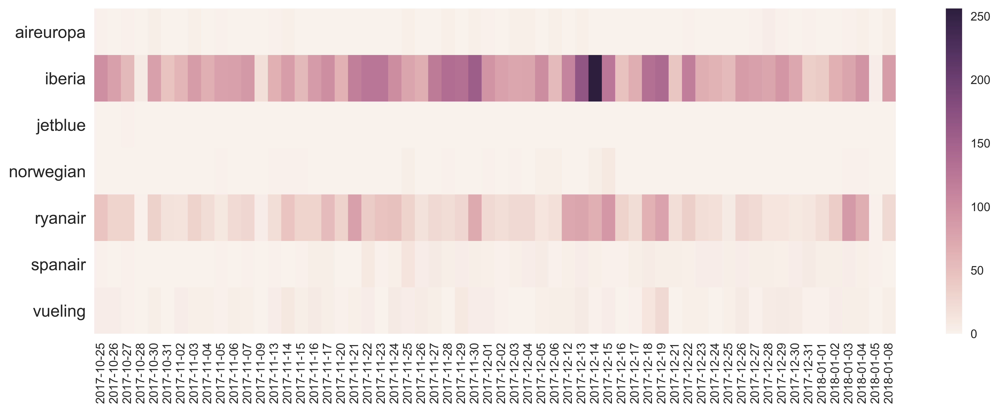

–– happybirds team ––
This site is the project documentation of the happybirds team for the capstone project for the postgraduate Data science and big data course of the University of Barcelona. The tasks were to develop a machine learning algorithm for an annotated dataset and to analyze the dataset for insights. Hereby we present what our team did and what technologies we used. The first part discusses the modelling, the later parts the insights we have found analyzing the dataset.
The problem to be solved for the capstone project is an airline sentiment tweet classification. The teams of the postraduate course received two datasets: one containing tweets in English already classified and a second dataset with tweets in Spanish, which was classified by the students of the postgraduate course on a platform designed for this task.
For the solution presented below, we have developed a project in Python that has all the tools needed to run the necessary phases to import, transform, train, validate, test and optimize for a tweet sentiment classification. All codes are available in this Github repository.
Firstly, the sections below cover the in-depth description of the steps taken for the solution of the classification problem in a chronological order, the results obtained, and the next steps that could have been potentially done on the Spanish dataset. Secondly, the insights are presented we have found upon analyzing the dataset. These two main parts are discussed in the following chapters:
To navigate between these parts use the menu on the top right corner.
We have started the project with experimenting, ie. “playing around” with the dataset in a Jupyter notebook. We have soon realized that using a notebook to store the final solution would be a problem when team members wanted to share they work with each other. We have agreed to start working on a centralized solution that made the code versioning easy.
The main reason why we chose the Python project format instead of working on a lengthy Jupyter Notebook was the flexibility such a project has in terms of code sharing. Versioning a Jupyter Notebook can potentially be a bad idea as it stores all the results within. As a consequence, each time a team member re-executes even just one cell locally, Git recognises it as a change and asks to commit it. There is a way to avoid this phenomenon by resetting the notebook output each time a team member pulls or pushes changes. However, this can easily be forgotten causing subsequent chaos. Having a final version as a Python project enables any team member to execute the parts in the way she prefers. Also, it allows team members to experiment if the code is correctly modularized. Finally, each team member has the chance to do this by using her own Jupyter Notebook, iPython or even directly from the developing tool.
Upon designing the project architecture it was a clear objective to have two main parts separating the train and the evaluation/test parts – just like in case of any supervised machine learning project – in order to avoid common errors committed by mixing the two parts. We have also aimed at keeping the code as simple as possible.
Once the architecture was defined, the next step was the transformation of the tweets’ text. The core transformations and feature engineering done were in order of execution:
The first model was generated using Bag of Words (BoW) with a Naive Bayes classifier. We soon realized that for the BoW we were forced to split the transformation step into two parts, primarily because when building the BoW itself it was necessary to also train it. Thus if we wanted to fully split the transformation and the training part, we were forced to split the transformation in pre-transform and transform.
After experimenting with some models like Random Forest and Support Vector Machine (SVM), we started exploring other alternatives instead, such as Word2Vec. After some research we found out that Word2Vec is basically a neural network with a couple of layers. The basic idea is that two words are considered similar – and thus they will have similar vector representation – if they have similar neighbours (neighbour of a word understood as the words that surround this word). In that sense, we had the chance to work with a hybrid model with a part of a seemingly neural network and another part with a classical classifier, which could be SVM or Random Forest. Regarding the integration with the architecture defined, Word2Vec had a similar problem as BoW had: it had to be trained before transforming the data. Also Word2Vec required that the data was tokenized and transformed as a vector.
The last step we made was the tuning of the hyperparameters of both SVM and Random Forest. For the first one, we have also developed a normalization in order to ensure the model was receiving the correct data during the training. As happened with the BoW and Word2Vec, the normalization had a part that is considered training so we had to split it too to avoid errors. Finally, we have used the GridSearchCV library to tune up the hyperparameters for both SVM and Random Forest. For the SVM, a RBF kernel was used and C (penalty parameter of the error term) and Gamma (Kernel coefficient) were tuned. For Random Forest the maximum depth used and the number of estimators were also tuned.
The chart below presents the basic structure of the final project architecture from high perspective. The main idea was to separate the different parts of the machine learning pipeline – such as the data load, data transformation, model training, model evaluation, and test check – all translated into four different Python classes. These four classes are discussed below the chart.
The first class imports the dataset and returns it into a Pandas dataframe. This separation was made serving generalization, as the dataset does not necessarily come from a .csv file, but could come from other source. We opted for this, as first we have received the English tweets dataset, and received the Spanish later during the course – at that point in an unknown format.
As mentioned earlier, given that we had to both train the BoW, the Word2Vec and/or had to normalize, it was necessary to separate the transformation class’s processes in two parts. Firstly, the code transforms the data itself. After that, the user is supposed to train the BoW, Word2Vec or normalizator. Once done, there is a second function to be called in order to transform the data accordingly. The reason behind was that we wanted to ensure that both training and test executes the exact transformations to minimize functional errors. Given that one of our goals was also looking for flexibility, the architecture of the second transformation function allows the user to decide the usage combination of BoW and/or Word2Vec and/or normalization.
The third class does the training for BoW, Word2Vec, normalization, and even optimization. After training, the model is stored in this class.
Finally, the fourth class performs all the calls to the different parts explained above and depending on the parameters of the calls it can optimize the hyperparameters, train, validate, test a model, and/or generate the required output.
For the validation test of the model, the configuration used was test_size=20%, validation_size=25%, and n_iterations=10.
Best Hyperparams: max_depth = 11; n_estimators = 483. The results obtained with this hyperparameters are:
Best Hyperparams: C = 695.1927961775606, gamma = 3.792690190732254e-05. The results obtained with this hyperparameters are:
Best Hyperparams: C = 1.4384498882876628, gamma = 0.00615848211066026. The results obtained with this hyperparameters are:
Best Hyperparams: C = 1.4384498882876628, gamma = 0.00615848211066026. The results obtained with this hyperparameters are:
It has to be noted that the three labels in the dataset were disproportionate, which does have an effect on the whole model. Also, our model might have fallen for overfitting. In order to improve the model's results performance, the following steps could be taken:
An ad hoc analysis of an unbalanced dataset, or What was happening with Iberia?
The Spanish tweets dataset contains 7867 tweets from October 25, 2017 to January 8, 2018 downloaded using the keywords AirEurope, Aireurope (sic!), Iberia, Norwegianairline, Ryanair, and Spanair. However, the appeareance of the airlines is rather hectic. The table below contains these airlines, and some others, which popped up during the analysis.
| airline | number of mentions |
|---|---|
| Iberia |
5100 |
| Ryanair | 1938 |
| Vueling | 204 |
| Spanair |
151 |
| AirEuropa | 40 |
| Norwegian | 27 |
| Jetblue | 1 |
The tweets' sentiments were annotated by the students of the postgraduate course. The 48.1 percent of the tweets were annotated as negative, 32.5 percent as neutral, and 19.4 percent as positive. The chart below shows the distribution of the number of tweets by each sentiment by day. The day with the highest traffic was December 14, 2017 – most of the tweets published being negative.
If we look for the airlines mentioned, we see that it was Iberia, which was mentioned mostly on December 14, 2017. As out of all airlines mostly Iberia and Ryanair were mentioned in the whole dataset, we are focusing on these two airlines.
In what context were the airlines mentioned? The table below shows the rank of each word in terms of number of ocurrence by airline. The word "url" are used after having all links replaced by this word. The URLs part of this analysis will discuss potential explanation on the high number of links in the dataset.
| rank | Iberia | Ryanair | Vueling | Spanair | in whole dataset |
|---|---|---|---|---|---|
| 1 | @iberia | ryanair | url | spanair | url |
| 2 | url | url | @vueling | url | @iberia |
| 3 | iberia | @ryanair | vueling | accidente | iberia |
| 4 | vuelo | pilotos | @iberia | españa | ryanair |
| 5 | hola | huelga | iberia | video | vuelo |
| 6 | solo | vuelos | ryanair | vuelo | hola |
| 7 | gracias | vuelo | @ryanair | letal | @ryanair |
| 8 | mejor | españa | compañía | cadas | madrid |
| 9 | destino | avión | vuelo | barajas | vuelos |
| 10 | madrid | euros | vuelos | canal | gracias |
Most of the airlines are mentioned using the "@" sign in the tweets suggesting that by using Twitter's organic mention sign people wanted to communicate with the airline companies – except for Spanair, but it is reasonable to expect from a defunct company. The extensive use of "@"s is especially true for Iberia being @iberia the most frequently used word related to Iberia. Nevertheless, all other words at Iberia do not seem to have negative connotation. As for Ryanair, we see that probably a strike was going on (maybe that of pilots?), where flights were cancelled. As for Vueling, practically this company was mentioned related to the other airlines, we can see that both Ryanair and Iberia were mentioned along with Vueling. Spanair appeared as the accident had the anniversary.
Now that we have a broad picture of our dataset, in order to understand exactly what has happened to Iberia, in the next part we take a dive into text analysis using a widely used method: topic modelling.
Happy anniversary Iberia
For a greater depth about the tweets, we decided to use a topic modelling algorithm. The analysis was done with a conventional Latent Dirichlet Allocation (LDA) model in order to extract the volume and percentage contribution of each topic to get an idea of how important a topic is. Using the tool of LDA we get the following interactive visualization.
The Coherence score was used to select appropriate number of topics. After several runs it was decided to let it at 20 topics. Some of the topics are a little bit overlapped but the important and different ones appear clearly separated.
Inferring the topics from keywords
After looking into all the keywords in the above graph the following topic names were deduced. For each tweet, a dominant topic was assigned. Tweets with a topic probability lower than 20 percent were left uncategorized. When doing topic modelling, the topics are usually not 100 percent clean and clear, thus we have left some question marks in the picture below presenting the topics.
Iberia
In the following plot all the topics and the percent of appearances are displayed (please note that the chart was insipred by Christian Rudder's chart in Dataclysm about the word use of OkCupid profiles). The X axis represents Iberia percentage and the Y axis represents the percentage from all the other companies together. Topics below the line are more important in Iberia dataset and topics above the line are more important for the other airlines.
The most relevant topics in Iberia are:
The chart suggests that:
Ryanair
Similarly, we had a look at the words used related to Ryanair vs. all other companies.
the most relevant topics in Ryanair are:
The timeline analysis indicates the strike call was around December 11 and December 17. The strike was cancelled around December 18 and December 20. See more information here.
From October 25 to October 27 Ryanair delayed to January its new hand luggage policy, see more information here.
What URLs were the users sharing?
In the dataset of 7867 tweets, there were 5448 URLs. Some of the tweets had not a single URL, but a few had even three:
| number of URLs | number of tweets |
|---|---|
| 0 | 2684 |
| 1 | 4745 |
| 2 | 361 |
| 3 | 4 |
As Twitter by default shortens links, we have used a small script using the Requests library to unshorten them, so instead of "https://t.co/8c66y40ejv" we would see "https://www.grandesmedios.com/accidente-vuelo-5022-spanair/". As it is higly recommended to trick websites in order not to be rejected from the site, the snippet had a few seconds of sleeping built in.
Out of the 5448 links only 34 were still working (or curling was not omitted). Most of the received long URLs were leading to Twitter posts or pictures, and only a handful lead to a news portal or a company website. A possible explanation for the few received long URLs could be – apart from the obvious that our URL unshortener code is wrong, – that the links lead to Twitter user's profiles, which do not exist any more (recall that most of the dataset is from last year). There is only one domain appearing more than once in the dataset: "hipertextual.com" coming from campaigns indicated by the ending of the link ("utm_medium=feed&utm_source=feedpress.me&utm_campaign=Feed:+hipertextual").
Having a look at those tweets, which had three links in them, it turned out that three out of four were published by the same user: @joselitoba5. (These tweets are respectively: tweet 1, tweet 2, and tweet 3.) Among the shared links of this user appear the hipertextual.com domain. If we have a look at the content of that site, we see that it is fairly similar to the content published by @joselitoba5.
@joselitoba5 published 48 900 tweets and has 29 followers – it seems that activity does not pay off for this user. Or @joselitoba5 is a bot using popular content to generate traffic on the Hipertextual Sniply site. The next step of the analysis could be to detect bots. As the dataset has the tweet ID, using the "twitter.com/anyuser/status/{tweetid}" formula, we could get back the user name, and based on that using the Twitter API we could download the profile information of our tweets' authors, their number of followers, number of tweets posted and age of profile, and a metric could be created trying to figure out whether a user is a bot or not.
comments?
Here we could discuss major assumptions or just simply what we learntf from this for instance praising github or something. What do you think?